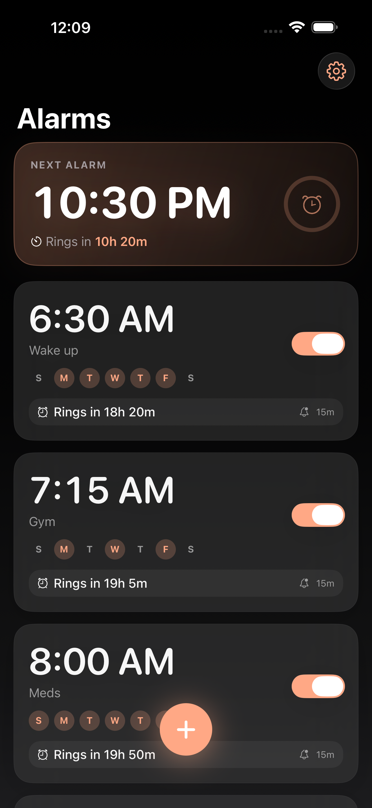
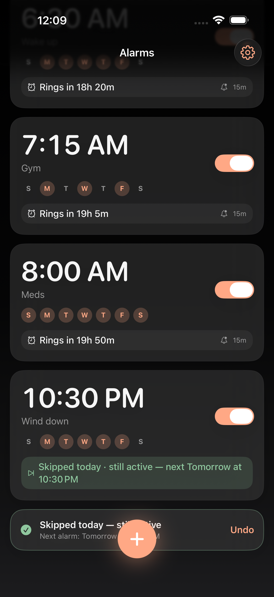
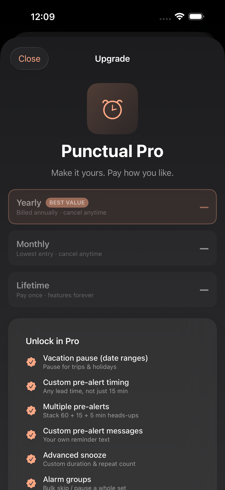

Smart alarm for iPhone
Skip today,
never forget tomorrow.
The Android-style smart alarm Apple Clock should have had. See exactly when it rings, get a heads-up before it does, and skip just today — without losing tomorrow.

Everything the built-in alarm is missing
Focused, premium, and obsessed with one workflow: create → see the countdown → get a pre-alert → skip today.
Live countdown
Always know how long until it rings — “Rings in 7h 42m”, right on the card and as you set the time.
Pre-alert heads-up
A friendly notification before the alarm goes off, with a Skip today button built in.
Skip today
Skip just today’s occurrence in one tap. The alarm stays armed for tomorrow — never accidentally off.
Vacation pausePRO
Pause an alarm for a date range and it resumes automatically. Perfect for holidays and trips.
Recurring + exceptions
Weekday schedules, one-time dates, and per-day exceptions — handled cleanly and reliably.
Yours to makePRO
Themes, accent colors, alternate app icons, custom sounds — a calm, premium look in light and dark.
The hero feature
Skip today. Keep tomorrow.
Got a day off? Tap Skip today — from the card, the pre-alert notification, the Lock Screen, or Siri. Punctual skips only today and reassures you it’s still active for the next day, with one-tap Undo.
No more turning an alarm off and forgetting to turn it back on.

Free forever. Pro when you want more.
The full alarm — countdown, pre-alert, and Skip today — is free, with no ads. Pay how you like for power features.
Pro adds custom & multiple pre-alerts, advanced snooze, alarm groups, calendar auto-skip, themes, app icons, widgets and custom sounds.

No rent on an alarm
Honest pricing
Don’t want a subscription? Lifetime unlocks everything with one payment. Prefer the lowest entry? Monthly is $1.99. No ads, ever.
Frequently asked
Will alarms ring through silent mode and Focus?
Yes — Punctual uses Apple’s AlarmKit, so alarms break through silent mode and Focus like the built-in Clock alarms.
What does “Skip today” do?
It skips only the next occurrence of a recurring alarm. The alarm stays enabled and rings again on its next scheduled day — so you never accidentally turn it off and forget.
Is Punctual free?
The full core experience — countdown, pre-alert, and Skip today — is free forever, with no ads. Punctual Pro is an optional upgrade.
Does Punctual collect my data?
No. Everything stays on your device. No servers, no accounts, no analytics, no tracking. See our Privacy Policy.
What’s the difference between Skip, Pause, and Off?
Off turns an alarm off permanently. Skip today skips just today and keeps it active for tomorrow. Pause stops an alarm for a date range (like a vacation) and resumes it automatically.